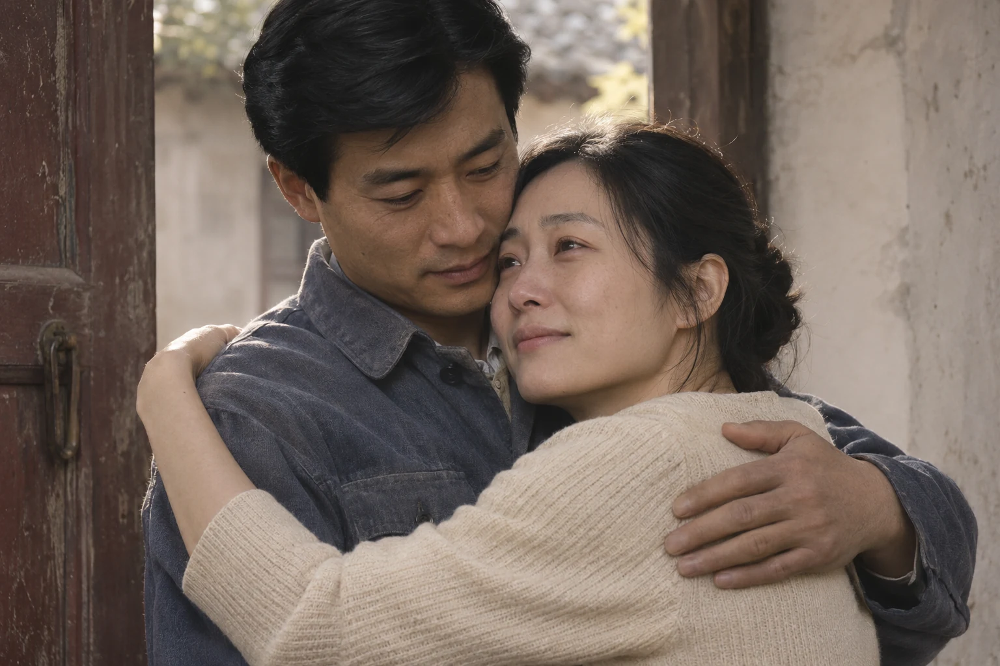
跨时空团圆短片
依据亲人与晚辈的照片，用 AI 创作一次想象中的团圆。一起坐坐、牵一牵手，把来不及留下的相聚做成纪念短片，寄托家人的思念。
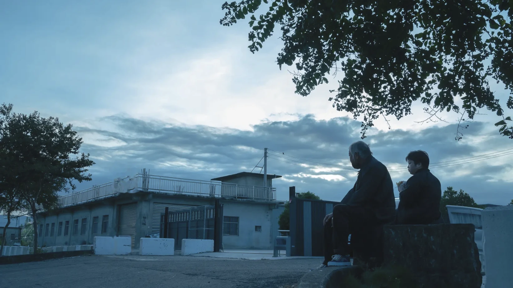
树上花开 · 我们的初心
为什么留下一部影片
想起一个人，最先浮现的常是小事。比如他习惯坐在饭桌的哪一边，出远门前总要叮嘱哪一句。这些细节和照片一起留下，家里人一看就知道，那是他。
兄弟姐妹记得他的少年，孩子更熟悉成家后的他。把各自记得的片段放进同一部影片，亲人也许会第一次听到，那些他从前没讲过的事。
追思时，亲友可以坐下来一起看。平时想他了，也可以在家里打开影片，看看他年轻时的样子，听听家人讲起他的往事。
有些孩子来不及和他相处。以后聊起家里的往事，他们可以从影片里知道他做过什么、喜欢什么，也能听见长辈怎么说起他。

依据亲人与晚辈的照片，用 AI 创作一次想象中的团圆。一起坐坐、牵一牵手，把来不及留下的相聚做成纪念短片，寄托家人的思念。
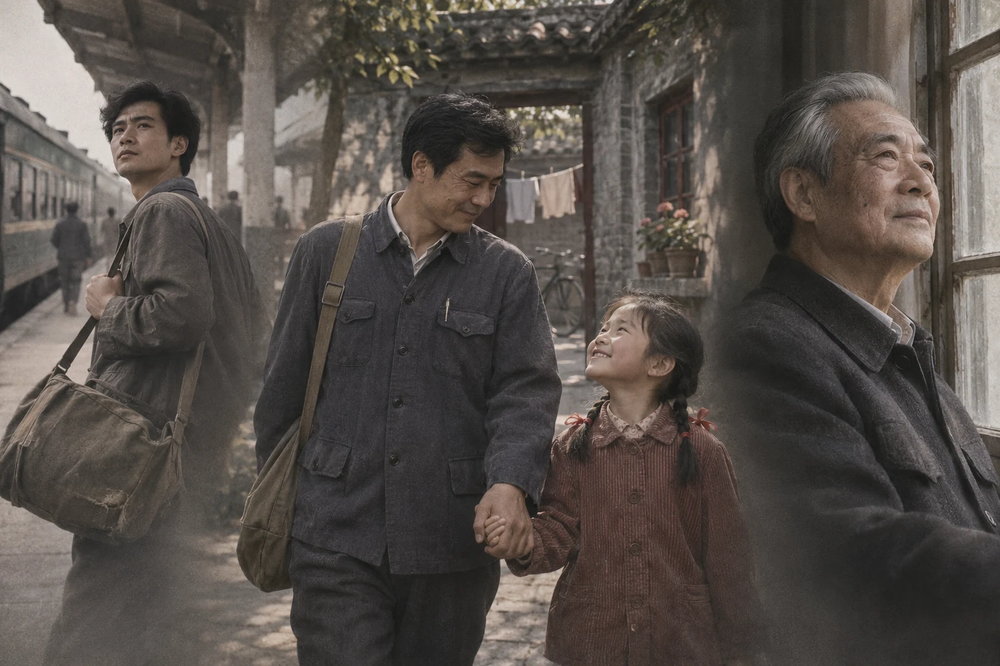
按人生阶段，用老照片、旧录像和家人访谈讲述一个人的一生。重要的往事如果没有留下影像，可以根据家人的讲述用 AI 重现。
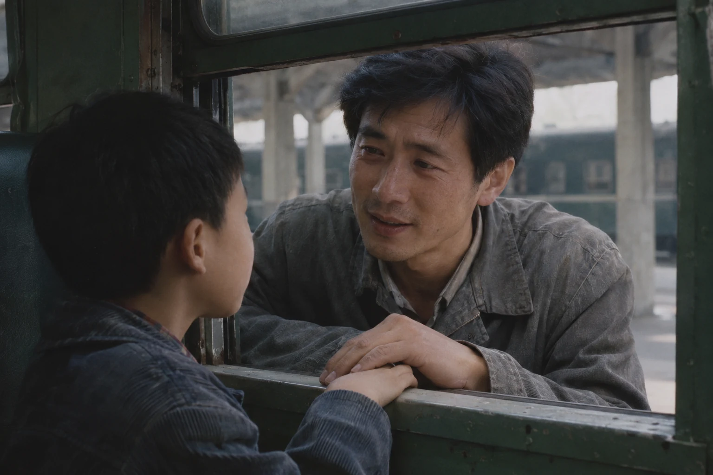
选一段最想留住的往事，比如第一次远行时，父亲在车窗边叮嘱自己的样子。以照片和家人的讲述为依据，用 AI 把那段回忆做成短片。
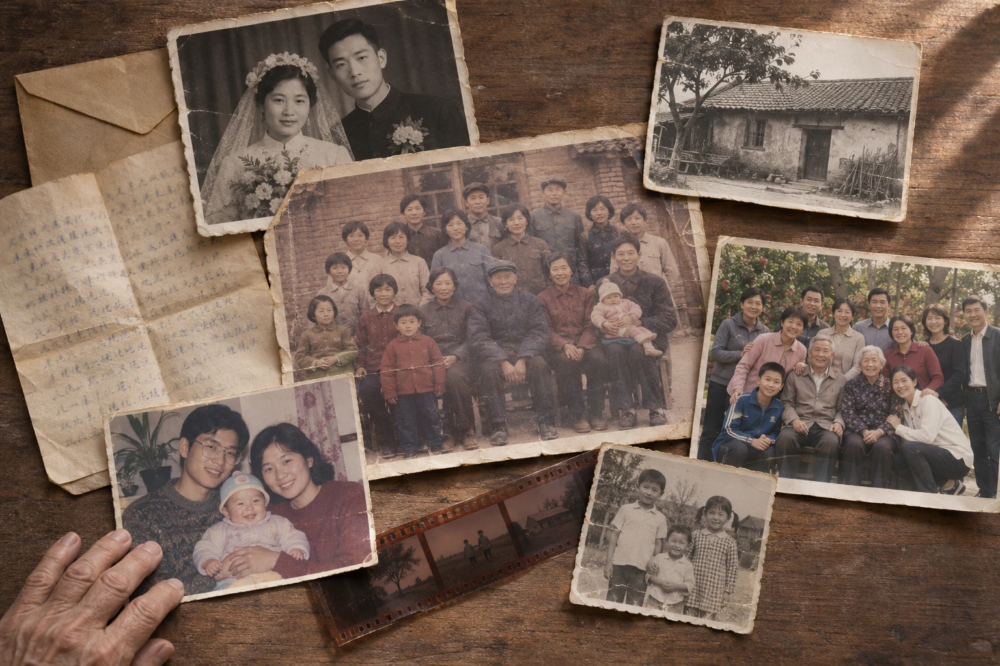
把几代人的合影、家里的旧录像和长辈讲的事放进一部片里。从老家、搬迁到团聚，记录一家人共同走过的日子，也可以用 AI 重现记忆里的老宅和街巷。
根据旧照片和家人的描述，用 AI 重建已经变了模样的老屋、院子与街巷。让镜头沿着熟悉的路走一遍，重新看看亲人生活过的地方。
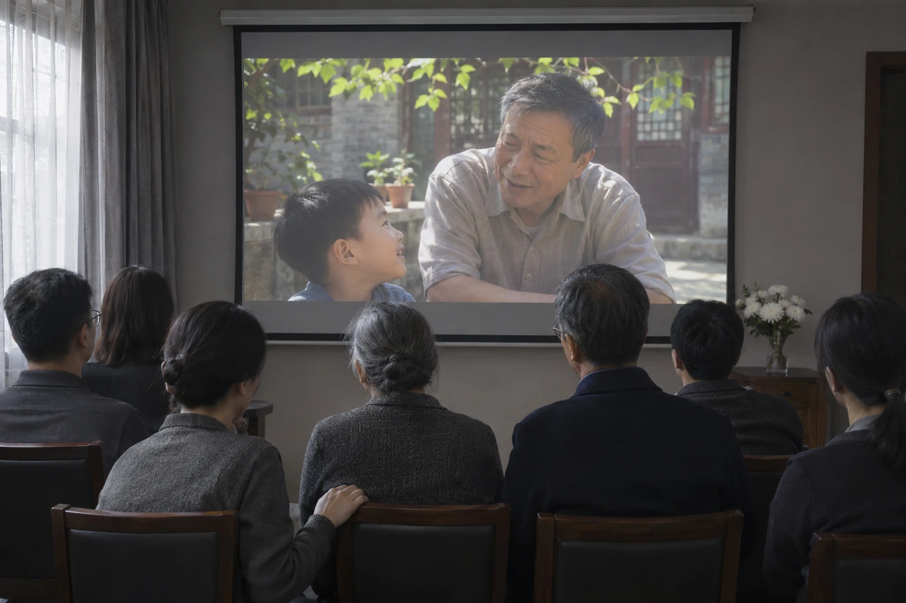
适合在告别仪式或追思会上播放。把亲人不同时期的照片、家人想说的话和配乐剪成一部片，也可以穿插 AI 制作的短镜头。
提供人物照片，让未曾同框的家人相聚；也可推演不同年龄的样貌，定制一张跨越时光的合影。
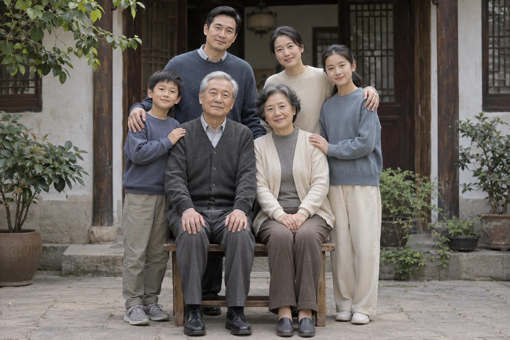
修整模糊、褪色与破损，保留亲人熟悉的神态。
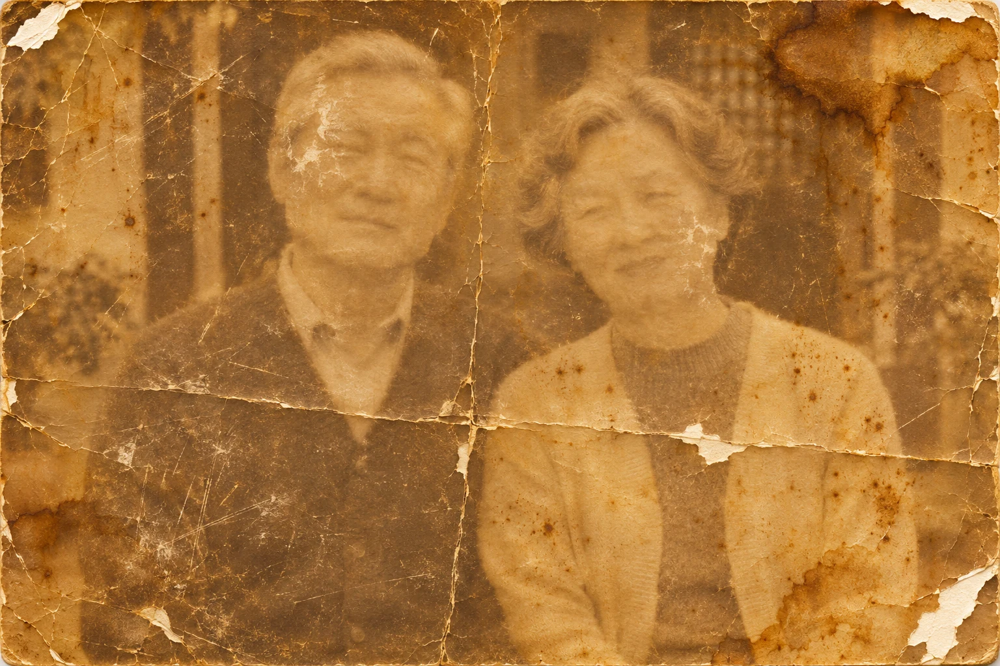
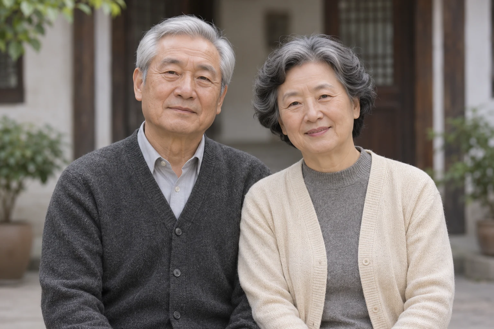
定制流程
一起整理照片、旧影像和家人记得的往事。
先看故事脚本与人物预览，再确认制作方向。
按确认的方案完成 AI 镜头、剪辑、旁白与配乐。
家人审看确认后，交付高清影片与精修照片电子版。
树上花开影视传媒
从追思纪念到往事重现，导演把家人的讲述整理成故事，影像与声音团队共同把故事做成影片。
选择值得讲述的往事，设计镜头与叙事节奏，让影片留下一个人的性格与经历。

中国内地导演
1999 年毕业于北京电影学院导演系。
创作涵盖现实、年代及战争题材，作品曾多次在央视一套、八套播出。
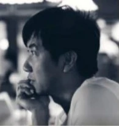
中国内地导演
2005 年执导电影《阿司匹林》。
2006 年执导《新结婚时代》，创作领域涵盖电影与电视剧。
根据影片内容与制作需求安排主创，具体导演及参与环节在制作方案中确认。
依据照片与分镜重现人物、往事和故居，完成镜头生成、剪辑与调色。
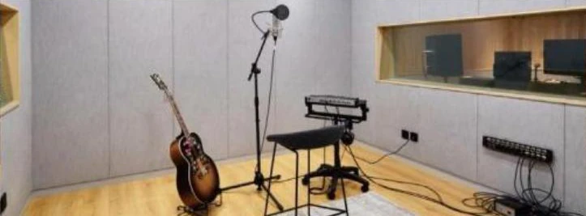
整理家人的讲述，按需录制旁白、制作配乐，让声音与画面的情绪自然相合。
作为火山引擎 Seedance 2.0 白名单合作客户，签订年度规模化算力框架，享有高阶模型能力与专属技术运维支持。
隐私保护
专人对接，影像素材在独立加密环境中处理。
影片仅交付家属，播放与分享范围由家属决定。
确认收片后，删除云端原始素材及工程文件，不留服务器备份。
未经家属书面授权，照片与影片不用于宣传、展示或公开模型训练。